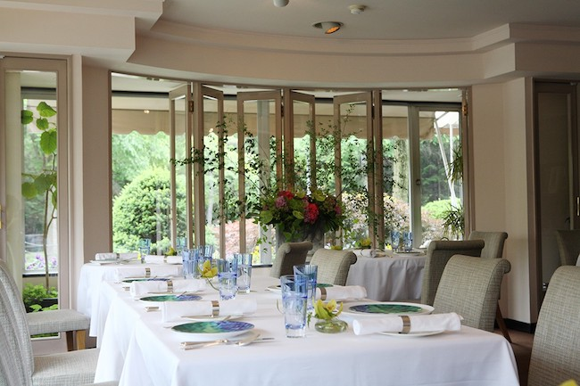

About Hokkaido
The is Japan’s northernmost island. It is largest of Japan’s 47 prefectures and Japan’s second largest island. There are 4 distinct seasons, which allows the residents to have something to do all year round. The island is filled with untouched
wilderness. The island is renowned for the high quality and freshness of its seafood.
Sapporo 札幌
The largest city in Hokkaido. This is the snowiest city on the planet with close to 6 meters of snow a year. The city is bustling with excitements, entertainments, nightlife, and more.
Hakodate 函館市
The third largest city in Hokkaido. The city is filled with old western houses, churches, and warehouses, since it was the first port, opened to the west. There’s Goryokaku, a fort with a star-shaped moat, which is one of the popular attraction.
Places To Visit/Activities To Do
Hot Spring Heaven: There are both lavish facilities in luxurious modern resorts and simple hot spring pools deep in the mountains. There are many onsens, hot spring bath, with a wilderness view.
Sapporo Yuki Matsuri (Snow Celebration): There are many really cool looking snow sculptures, depicting monuments, temples, cartoon characters, and sports and entertainment celebrities. These are displayed in three venues. Many more activities
were added as the festival grew. Reserve a spot well in advance since there are more than two million visitors attending each year.
Furano: This is a small town known for its downhill and cross-country skiing destinations during the winter. In the summer, the town is known for its fields of colorful flowers.
Restaurants
Restaurants in Sapporo
Gotsubo: This is a seafood restaurant that serves fresh food. There oysters that can be ordered raw or grilled.
Hyosetsu no Mon: This is a seafood restaurant where people tend to order crabs. The foods are both delicious and healthy.
Moliere: This is a French restaurant that uses fresh local ingredients from Hokkaido. The restaurant uses Hokkaido specialties to make the place unique.

Restaurants in Hakodate
Sushidokoro Kihara: This is a sushi restaurant. Sushi lovers will enjoy coming here due to the taste of the food.
 Rokkatei, Goryokaku: This is a cafe. People can spend their free time with their friend while having tasty cake and tea. There’s a great view of the Goryokaku Park.
Uni Murakami, Hakodate Honten: This is a seafood restaurant known for their uni. The uni lovers would try out the many dishes that the restaurant serves with their friends.
Rokkatei, Goryokaku: This is a cafe. People can spend their free time with their friend while having tasty cake and tea. There’s a great view of the Goryokaku Park.
Uni Murakami, Hakodate Honten: This is a seafood restaurant known for their uni. The uni lovers would try out the many dishes that the restaurant serves with their friends.